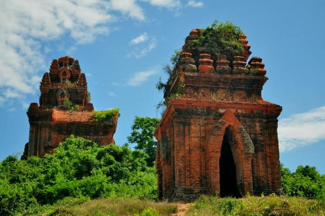
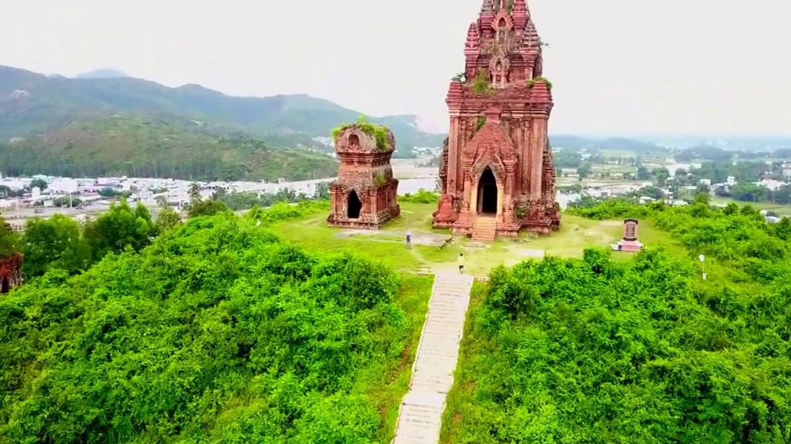
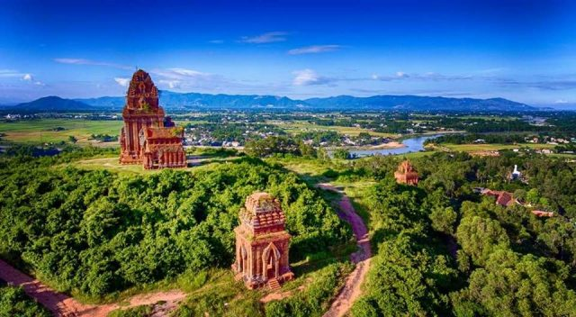

 Nhắc đến quần thể kiến trúc Chăm còn sót lại khắp Việt Nam, người ta thường nghĩ ngay đến di tích Mỹ Sơn ở Quảng Nam. Hay đền tháp tại Ninh Thuận mà quên mất trên khúc ruột miền Trung còn có Bình Định. Nơi ẩn giấu dòng thời gian đã qua của một đất nước Cham-pa hùng mạnh. Tháp Bánh Ít là một trong những cụm tháp lâu đời nhất và là điểm dừng chân mà du khách không thể bỏ qua.
 Tháp Bánh Ít nằm tại thôn Đại Lễ, xã Phước Hiệp, huyện Tuy Phước, tỉnh Bình Định. Toàn bộ quần thể có tất cả 4 tháp, nằm trên một ngọn đồi thoai thoải cách mực nước biển chỉ chừng 100 mét. Nhìn từ xa, cụm tháp trông giống như bánh ít - một loại đặc sản ở Bình Định. Vì thế nên người dân địa phương gọi nơi đây là tháp Bánh Ít. Ngoài ra, tháp còn có tên gọi khác là tháp Bạc. Tháp được xây dựng vào thế kỷ thứ 10.
 Tháp Bánh Ít là di tích Chăm xưa cổ có lối kiến trúc đa dạng và phong phú nhất, mang đậm ảnh hưởng của nghệ thuật Cham-pa nhưng vẫn có nét gì đó rất riêng của mảnh đất võ. Cũng như hầu hết các ngôi tháp Chăm khác ở nước ta, tháp Bánh Ít cũng có hướng chính quay về phía Đông. Mỗi ngôi tháp là một kiểu kiến trúc riêng biệt với những điều bí ẩn được giấy kỹ trên từng mảnh tường, phiến đá. Dù không phải là quần thể tháp đồ sộ nhất, nổi tiếng nhất nhưng ai đã từng du lịch Bình Định và ghé thăm tháp Bánh Ít đều ngỡ ngàng trước sự phong phú trong phong cách thiết kế.
Project 4 - Môn xây dựng website đầu tiên (WEB101x)
Họ tên: Nguyễn Anh Tuân
MSSV: FX00336